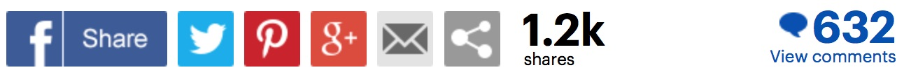

DailyMail
.com
Emma Stone is accused of 'white feminism' and slammed for 'ignoring' the achievements of two men of color after calling Best Director nominees 'four men and Greta Gerwig'
- The 29-year-old is facing backlash for referring to the Academy Award nominees for Best Director as 'four men and Greta Gerwig' at Sunday night's show
- Critics accused Stone of minimizing the achievements of nominees Guillermo del Toro, a Mexican immigrant, and Jordan Peele, a black man, with her comment
- Many people noted that Peele was only the fifth black person to be nominated in the category and the only one in the running to take home the award that night
- Meanwhile, Best Director winner del Toro spoke candidly about being a Mexican immigrant during his acceptance speech
- Some argued that Stone's failure to recognize that two of the male nominees were miniorities was an example of 'peak white feminism'
By ERICA TEMPESTA FOR DAILYMAIL.COM
PUBLISHED: 15:52 EST, 5 March 2018 | UPDATED: 18:50 EST, 5 March 2018

Emma Stone is facing backlash for 'white feminism' after she referred to the Oscar nominees for Best Director as 'four men and Greta Gerwig' at Sunday night's awards show.
The 90th Academy Awards were filled with references to the Time's Up movement, but many people felt Stone's jab about gender disparity in Hollywood missed the mark because it dismissed the accomplishments of two men of color.
Critics took to Twitter to accuse the 29-year-old actress of minimizing the achievements of Best Director nominees Guillermo del Toro, a Mexican immigrant, and Jordan Peele, a black man, in her controversial introduction.

'It is the director whose indelible touch is reflected on every frame,' Stone started her speech. 'It is the director who, shot by shot, scene by scene, day by day, works with every member of the crew to further the story.
'And it is the vision of the director that takes an ordinary movie and turns it into a work of art,' she continued. 'These four men, and Greta Gerwig, created their own masterpieces this year.'
Although Stone's comment was met with laughter and shouts at the awards show, it caused quite a stir on Twitter as people debated whether it was an appropriate comment about the lack of female representation in the category or simply dismissive of the hardworking male nominees.
Many people noted that Peele was only the fifth black person to be nominated in the category and the only one in the running for the award that night. Meanwhile, Best Director winner del Toro spoke candidly about being a Mexican immigrant during his acceptance speech.
'TBH I wasn't a fan of Emma Stone presenting Best Director at the #Oscars by saying "The men nominated and Greta Gerwig,"' the Women Film Directors Twitter account commented. 'Gerwig is only the 5th white woman to be nominated but Jordan Peele is only the 5th black man. How many Mexican directors are nominated?'